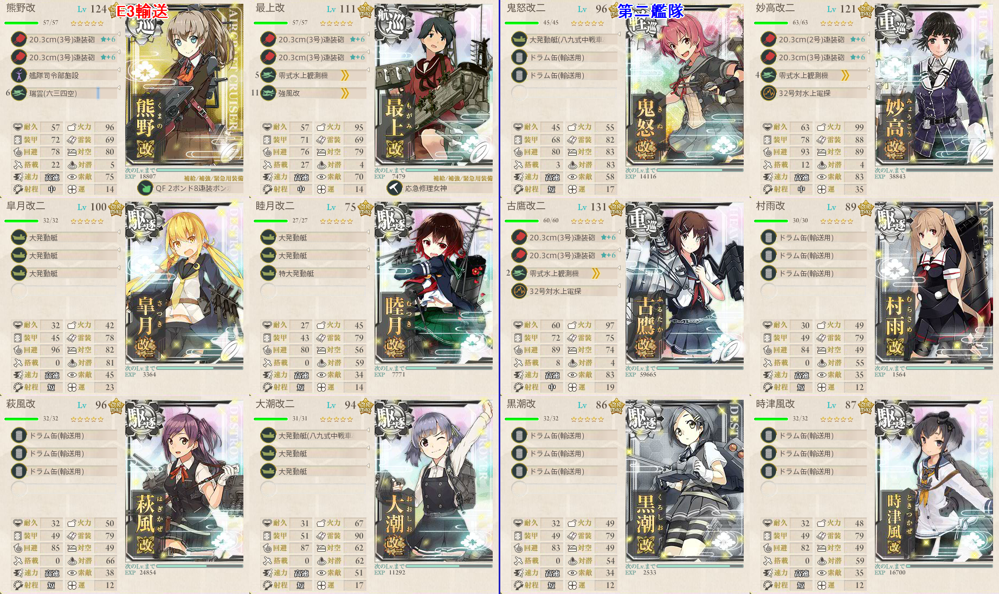
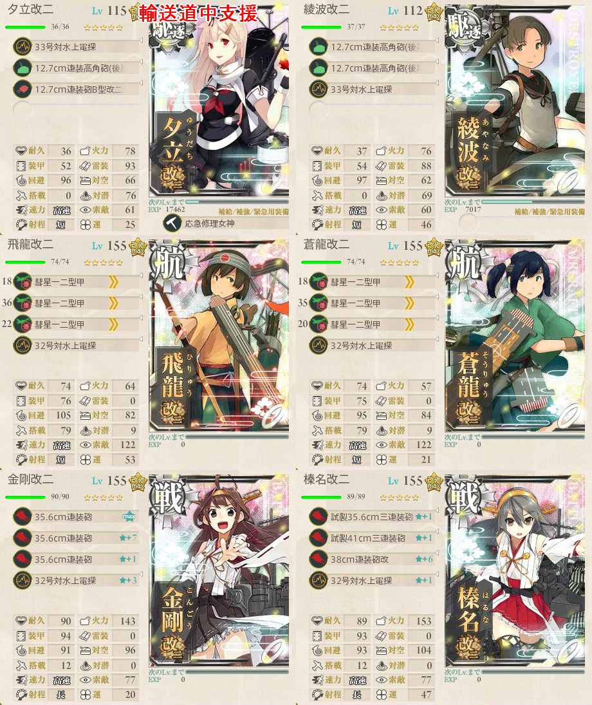
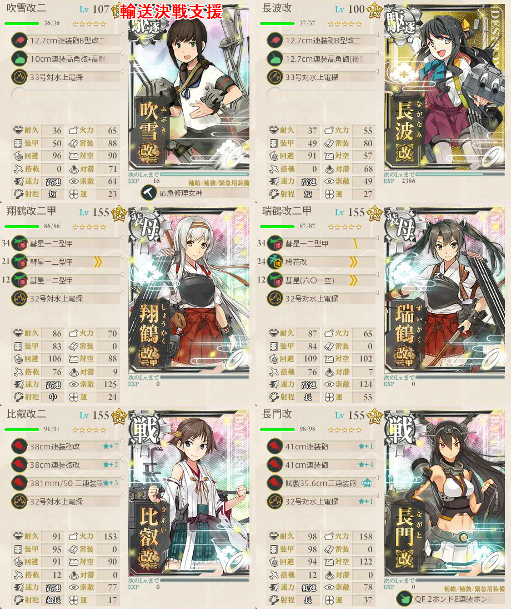
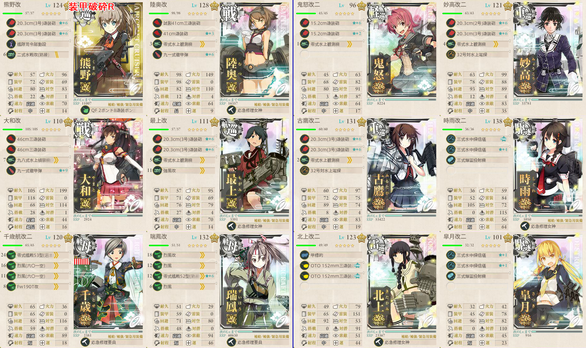
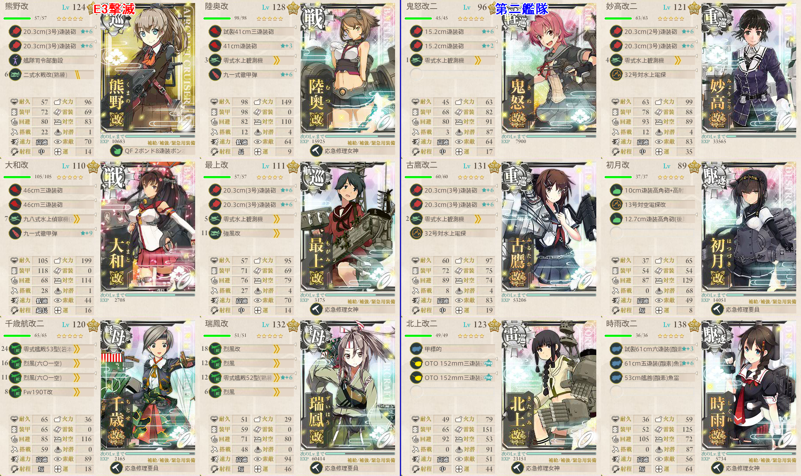
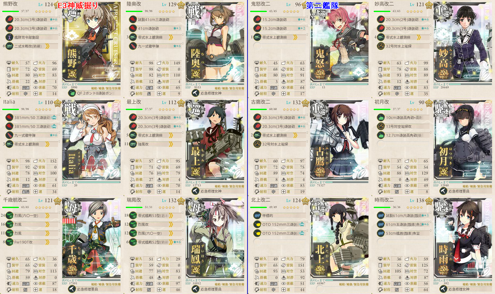
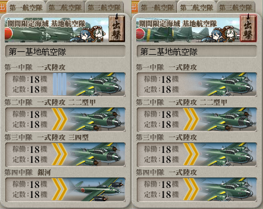

【艦これ】出撃！北東方面 第五艦隊 E3
目次
難易度：甲
ルート開示ギミック
- 北西の3つの港（B, C, E）に到達すれば良い
- 輸送連合で進軍し、それぞれの港の前で能動分岐を行う
構成
- 輸送連合
- 輸送用装備は不要だが、目的地で得られる資源が増える
基地航空隊
- 適当に陸攻を見繕って、道中の戦闘マスに向かわせれば良い
出撃ログ（甲）
| 回数 | 編成 | ルート | 戦果 | |
|---|---|---|---|---|
| 1 | 第一 | 熊野 最上 皐月 睦月 萩風 大潮 | JKHFDAB | 鋼材＆ボーキ |
| 第二 | 鬼怒 妙高 古鷹 村雨 黒潮 時津風 | |||
| 2 | 第一 | 熊野 最上 皐月 睦月 萩風 大潮 | JKHFDC | 燃料＆弾薬 |
| 第二 | 鬼怒 妙高 古鷹 村雨 黒潮 時津風 | |||
| 3 | 第一 | 熊野 最上 皐月 睦月 萩風 大潮 | JKHGE | - |
| 第二 | 鬼怒 妙高 古鷹 村雨 黒潮 時津風 | |||
敵編成
| マス | 敵航空戦力 | 敵潜水艦 | 備考 |
|---|---|---|---|
| K | なし | なし | 水雷戦隊 敵も基地航空隊あり？ |
| F | なし | なし | 軽巡1 補給3 駆逐2 複縦陣 |
| A | なし | なし | 補給連合 補給4 |
| H | あり | なし | 重巡1 軽空母1 軽巡2 駆逐2 複縦陣 |
輸送作戦
構成

大発 8 * 10
ドラム缶 5 * 14
駆逐艦 5 * 7
航巡 4 * 2
鬼怒 10
合計 8 * 10 + 5 * 14 + 5 * 7 + 4 * 2 + 10 = 203
A勝利時 203 * 0.7 = 142.1
500 / 203 = 2.5
500 / 142 = 3.5
支援艦隊（道中）

支援艦隊（決戦）

基地航空隊
- ボスまで距離9のため、九六式陸攻や一式陸攻三四型はそのままでは使えない
- 二式大艇などで距離を伸ばして使うこと
- ボス集中
出撃ログ（甲）
| 回数 | 編成 | ルート | 戦果 | |
|---|---|---|---|---|
| 1 | 第一 | 熊野 最上 皐月 睦月 萩風 大潮 | JKMQV | A勝利（鈴谷） TP142 |
| 第二 | 鬼怒 妙高 古鷹 村雨 黒潮 時津風 | |||
| 2 | 第一 | 熊野 最上 皐月 睦月 萩風 大潮 | JKMQV | A勝利（榛名） TP142 |
| 第二 | 鬼怒 妙高 古鷹 村雨 黒潮 時津風 | |||
| 3 | 第一 | 熊野 最上 皐月 睦月 萩風 大潮 | JKMQV | B勝利 |
| 第二 | 鬼怒 妙高 古鷹 村雨 黒潮 時津風 | |||
| 4 | 第一 | 熊野 最上 皐月 睦月 萩風 大潮 | JKMQV | A勝利（龍驤） TP142 |
| 第二 | 鬼怒 妙高 古鷹 村雨 黒潮 時津風 | |||
| 5 | 第一 | 熊野 最上 皐月 睦月 萩風 大潮 | JKMQV | Q 睦月大破 村雨退避 S勝利（阿賀野） ゲージ破壊 |
| 第二 | 鬼怒 妙高 古鷹 村雨 黒潮 時津風 | |||
敵編成
| マス | 敵航空戦力 | 敵潜水艦 | 備考 |
|---|---|---|---|
| K | なし | なし | 水雷戦隊 |
| Q | なし | なし | 水雷戦隊 |
| V | あり | なし | 連合艦隊 |
装甲破砕Rマス
- P、R、VマスでS勝利することにより、ボスを弱体化できる
- 自信があればやらなくても良いが、やっておくとボスが非常に柔らかくなり気持ちが楽になる
- Vマスは輸送作戦でS勝利していなければ、同様の構成で輸送装備を攻撃装備に変更すれば良い
- Pマスは撃滅作戦攻略中にS勝利できる
- Rマスのみ潜水艦が交じるため、装備構成を変更する必要がある
構成

- 空母の装備は攻撃機にして良い
出撃ログ（甲）
| 回数 | 編成 | ルート | 戦果 | |
|---|---|---|---|---|
| 1 | 第一 | 熊野 陸奥 大和 最上 千歳 瑞鳳 | JNR | S勝利（那智） |
| 第二 | 鬼怒 妙高 古鷹 時雨 北上 皐月 | |||
敵編成
| マス | 敵航空戦力 | 敵潜水艦 | 備考 |
|---|---|---|---|
| R | なし | あり | 潜水艦2が交じる |
撃滅作戦
構成

- 水上打撃部隊
- 第一艦隊に夜偵を積んでも仕方ないので、第二艦隊に移してあげよう
支援
- 輸送と同様
基地航空隊
- 輸送時と同様の構成をボスに
出撃ログ（甲）
| 回数 | 編成 | ルート | 戦果 | |
|---|---|---|---|---|
| 1 | 第一 | 熊野 陸奥 大和 最上 千歳 瑞鳳 | JNPSW | P S勝利 W A勝利（利根） |
| 第二 | 鬼怒 妙高 古鷹 時雨 初月 北上 時雨 | |||
| 2 | 第一 | 熊野 陸奥 大和 最上 千歳 瑞鳳 | JNPSW | S勝利（鈴谷） |
| 第二 | 鬼怒 妙高 古鷹 時雨 初月 北上 時雨 | |||
| 3 | 第一 | 熊野 陸奥 大和 最上 千歳 瑞鳳 | JNPSW | S勝利（加賀） |
| 第二 | 鬼怒 妙高 古鷹 時雨 初月 北上 時雨 | |||
| 4 | 第一 | 熊野 陸奥 大和 最上 千歳 瑞鳳 | JNPSW | S勝利（日向） |
| 第二 | 鬼怒 妙高 古鷹 時雨 初月 北上 時雨 | |||
| 5 | 第一 | 熊野 陸奥 大和 最上 千歳 瑞鳳 | JNPSW | S S勝利（阿賀野） W A勝利（山城） ゲージ破壊 |
| 第二 | 鬼怒 妙高 古鷹 時雨 初月 北上 時雨 | |||
- 5回目からラストダンス
敵編成
| マス | 敵航空戦力 | 敵潜水艦 | 備考 |
|---|---|---|---|
| P | なし | なし | 軽巡1 根級1 ツ級2 駆逐2 |
| S | なし | なし | 戦艦2 軽巡2 駆逐2 複縦陣 |
| W | あり | なし | ボス 連合艦隊 ラストダンスは第二艦隊に古姫がいる |
神威掘り
構成

- 支援不要
- 制空値580を目安に
- 足りなければ第二艦隊に軽空母1
- その際、各軽空母の１スロットを攻撃機にすると手数が増えて良い
基地航空隊

- ボス集中
出撃ログ（甲）
| 回数 | 編成 | ルート | 戦果 | |
|---|---|---|---|---|
| 1 | 第一 | 熊野 陸奥 Italia 最上 千歳 瑞鳳 | JNPSW | S勝利（瑞鳳） |
| 第二 | 鬼怒 妙高 古鷹 時雨 初月 北上 時雨 | |||
| 2 | 第一 | 熊野 陸奥 Italia 最上 千歳 瑞鳳 | JNPSW | S勝利（瑞鳳） |
| 第二 | 鬼怒 妙高 古鷹 時雨 初月 北上 時雨 | |||
| 3 | 第一 | 熊野 陸奥 Italia 最上 千歳 瑞鳳 | JNPSW | S勝利（龍驤） |
| 第二 | 鬼怒 妙高 古鷹 時雨 初月 北上 時雨 | |||
| 4 | 第一 | 熊野 陸奥 Italia 最上 千歳 瑞鳳 | JNPSW | S 千歳大破 ダメコン進撃 消費なし S勝利（神威） |
| 第二 | 鬼怒 妙高 古鷹 時雨 初月 北上 時雨 | |||
敵編制
- ボスは削り時の構成固定？